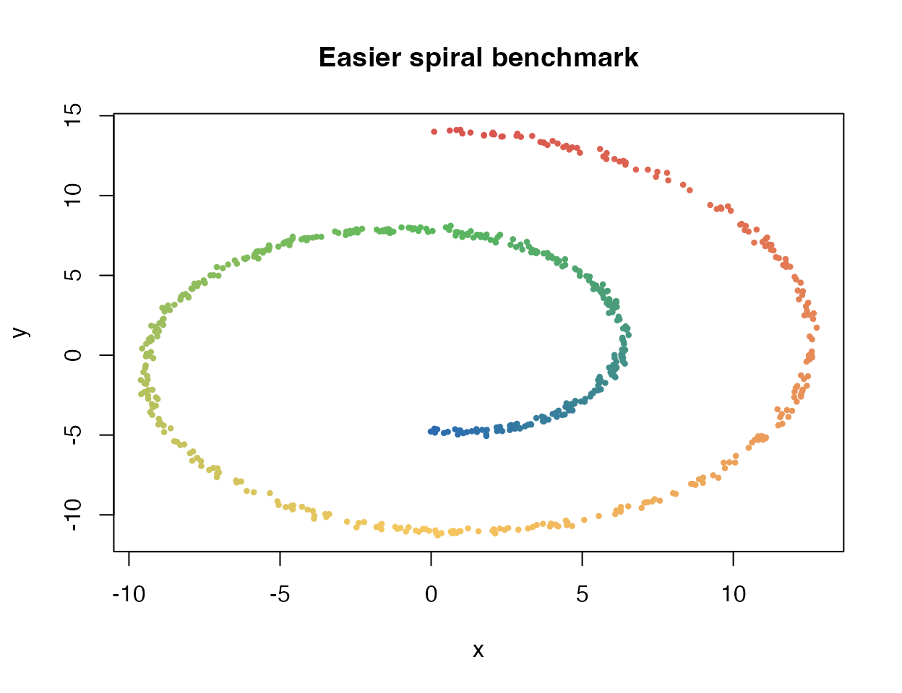
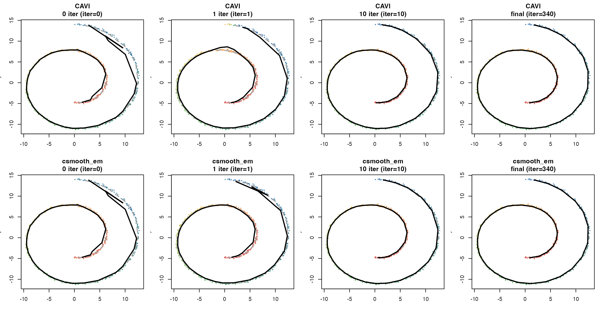
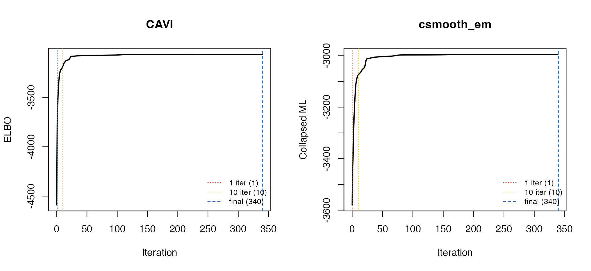

CAVI vs csmooth_em Across Optimization Snapshots
cavi_vs_csmooth_same_settings.RmdThis vignette revisits the cavi vs
csmooth_em comparison, but now focuses on how the
two fits evolve over time rather than only comparing their
final states.
The main question is simple:
- if we start from the same ordering method and the same model settings,
- how different do the fits look at
0,1,10, andfinaliterations?
To make that comparison easy to read, both methods are run as a
continuation path: we start at 0 iterations, then continue
to 1, then to 10, and then to a late-stage
fit.
1 Simulated data
We use the same easier spiral benchmark as in the earlier vignette: more observations, a shorter spiral, and a grid size that is large enough to make the ordering visible.
sim <- simulate_swiss_roll_1d_2d(
n = 600,
t_range = c(1.5 * pi, 4.5 * pi),
sigma = 0.12,
seed = 123
)
X <- as.matrix(sim$obs)
cat("n =", nrow(X), " d =", ncol(X), "\n")
#> n = 600 d = 2
cat("t range:", round(range(sim$t), 3), "\n")
#> t range: 4.717 14.132
pal_truth <- colorRampPalette(c("#2b6cb0", "#5cb85c", "#f6c85f", "#d9534f"))
cols_truth <- pal_truth(100)[cut(sim$t, 100)]
plot(X, col = cols_truth, pch = 16, cex = 0.6,
xlab = "x", ylab = "y",
main = "Easier spiral benchmark")
The easier spiral benchmark used throughout this vignette.
2 Matched settings
Both methods use the same high-level configuration:
method = "fiedler"K = 40rw_q = 2- initial
lambda_j = 1
This time, we make the comparison stricter in two ways:
-
0 iteris defined as the same shared raw initialization, not the method-specific object returned by each backend. - The
finalcolumn uses the same iteration count for both methods. We first runcaviwith a stricter tolerance (tol = 1e-10) to get a more conservative stopping point, then stopcsmooth_emat that same iteration count.
3 Snapshot helpers
truth_curve_bins <- function(sim, K) {
ord <- order(sim$t)
truth <- as.matrix(sim$truth[ord, c("x", "y")])
bin_id <- cut(seq_along(ord), breaks = K, labels = FALSE)
t(vapply(seq_len(K), function(k) {
colMeans(truth[bin_id == k, , drop = FALSE])
}, numeric(2)))
}
oriented_view <- function(fit, sim) {
K <- fit$K
positions <- if (K == 1L) 0 else (seq_len(K) - 1) / (K - 1)
t_hat_forward <- as.numeric(fit$gamma %*% positions)
t_hat_reverse <- 1 - t_hat_forward
rho_forward <- suppressWarnings(cor(t_hat_forward, sim$t, method = "spearman"))
rho_reverse <- suppressWarnings(cor(t_hat_reverse, sim$t, method = "spearman"))
reverse <- abs(rho_reverse) > abs(rho_forward)
t_hat <- if (reverse) t_hat_reverse else t_hat_forward
rho_t <- if (reverse) rho_reverse else rho_forward
mu_mat <- t(fit$params$mu)
if (reverse) {
mu_mat <- mu_mat[K:1, , drop = FALSE]
}
list(
t_hat = t_hat,
rho_t = rho_t,
reverse = reverse,
mu_mat = mu_mat
)
}
score_snapshot <- function(fit, sim, stage, init_view, algorithm_label = fit$algorithm) {
view <- oriented_view(fit, sim)
truth_bin <- truth_curve_bins(sim, fit$K)
get_last <- function(x) if (length(x) > 0L) tail(x, 1) else NA_real_
primary_value <- if (identical(fit$algorithm, "cavi")) {
get_last(fit$elbo_trace)
} else if (identical(fit$algorithm, "csmooth_em")) {
get_last(fit$fit$ml_trace)
} else {
NA_real_
}
primary_label <- if (identical(fit$algorithm, "cavi")) {
"ELBO"
} else if (identical(fit$algorithm, "csmooth_em")) {
"collapsed_ML"
} else {
"raw_init"
}
data.frame(
algorithm = algorithm_label,
stage = stage,
iter = fit$iter,
rho_t = view$rho_t,
curve_cor_x = suppressWarnings(cor(view$mu_mat[, 1], truth_bin[, 1], method = "spearman")),
curve_cor_y = suppressWarnings(cor(view$mu_mat[, 2], truth_bin[, 2], method = "spearman")),
rho_vs_iter0 = suppressWarnings(cor(view$t_hat, init_view$t_hat, method = "spearman")),
path_rmse_vs_iter0 = sqrt(mean((view$mu_mat - init_view$mu_mat)^2)),
primary_label = primary_label,
primary_value = primary_value,
stringsAsFactors = FALSE
)
}
make_shared_raw_init <- function(X, method, K, rw_q, lambda0) {
init <- initialize_ordering_csmooth(
X = X,
K = K,
method = method,
modelName = "homoskedastic"
)
K_eff <- length(init$params$pi)
gamma0 <- matrix(0, nrow(X), K_eff)
gamma0[cbind(seq_len(nrow(X)), init$cluster_rank)] <- 1
q_base <- make_random_walk_precision(
K = K_eff,
d = 1,
lambda = 1,
q = rw_q,
ridge = 0
)
raw_fit <- list(
algorithm = "shared_init",
iter = 0L,
K = K_eff,
gamma = gamma0,
params = list(
pi = init$params$pi,
mu = do.call(cbind, init$params$mu),
sigma2 = init$params$sigma2
)
)
cs0 <- as_csmooth_em(
params = init$params,
gamma = gamma0,
data = X,
Q_K = q_base,
lambda_vec = lambda0,
rw_q = rw_q,
modelName = "homoskedastic",
relative_lambda = TRUE
)
list(
init = init,
raw_fit = raw_fit,
gamma0 = gamma0,
q_base = q_base,
cs0 = cs0,
K_eff = K_eff
)
}
build_cavi_snapshots <- function(shared, final_budget, tol) {
fit1_raw <- cavi(
X = X,
K = shared$K_eff,
responsibilities_init = shared$gamma0,
pi_init = shared$init$params$pi,
sigma2_init = shared$init$params$sigma2,
lambda_init = lambda0,
rw_q = shared_rw_q,
max_iter = 1L,
tol = tol,
verbose = FALSE
)
fit10_raw <- do_cavi(fit1_raw, iter = 9L, tol = tol, verbose = FALSE)
fit_final_raw <- cavi(
X = X,
K = shared$K_eff,
responsibilities_init = shared$gamma0,
pi_init = shared$init$params$pi,
sigma2_init = shared$init$params$sigma2,
lambda_init = lambda0,
rw_q = shared_rw_q,
max_iter = final_budget,
tol = tol,
verbose = FALSE
)
list(
`0 iter` = shared$raw_fit,
`1 iter` = as_mpcurve(fit1_raw),
`10 iter` = as_mpcurve(fit10_raw),
final = as_mpcurve(fit_final_raw),
final_iter = fit_final_raw$iter
)
}
build_csmooth_snapshots <- function(shared, final_iter) {
fit1_raw <- do_csmoothEM(
object = shared$cs0,
data = X,
iter = 1L,
adaptive = "ml",
verbose = FALSE
)
fit10_raw <- do_csmoothEM(
object = shared$cs0,
data = X,
iter = 10L,
adaptive = "ml",
verbose = FALSE
)
fit_final_raw <- do_csmoothEM(
object = shared$cs0,
data = X,
iter = final_iter,
adaptive = "ml",
verbose = FALSE
)
list(
`0 iter` = shared$raw_fit,
`1 iter` = as_mpcurve(fit1_raw),
`10 iter` = as_mpcurve(fit10_raw),
final = as_mpcurve(fit_final_raw),
final_iter = final_iter
)
}
plot_snapshot_panel <- function(fit, sim, main, xlim, ylim, truth_curve, palette) {
view <- oriented_view(fit, sim)
cols <- palette(100)[cut(view$t_hat, 100)]
plot(X[, 1], X[, 2],
col = cols, pch = 16, cex = 0.45,
xlab = "x", ylab = "y",
xlim = xlim, ylim = ylim,
main = main)
lines(truth_curve[, 1], truth_curve[, 2], lwd = 2, lty = 2, col = "grey65")
lines(view$mu_mat[, 1], view$mu_mat[, 2], lwd = 2.2, col = "black")
points(view$mu_mat[, 1], view$mu_mat[, 2], pch = 16, cex = 0.45, col = "black")
}4 Build the snapshot ladder
The first column is now a shared raw initialization built once from the Fiedler ordering and then reused by both methods.
The final column is matched in iteration count:
- first, run
caviwith a stricter ELBO tolerance - take the iteration where
caviactually declares convergence - stop
csmooth_emat that same iteration count
shared_init <- make_shared_raw_init(
X = X,
method = shared_method,
K = shared_K,
rw_q = shared_rw_q,
lambda0 = lambda0
)
snapshots_cavi <- build_cavi_snapshots(
shared = shared_init,
final_budget = max_final_budget,
tol = cavi_tol
)
matched_final_iter <- snapshots_cavi$final_iter
snapshots_csmooth <- build_csmooth_snapshots(
shared = shared_init,
final_iter = matched_final_iter
)
snapshots <- list(
cavi = snapshots_cavi[c("0 iter", "1 iter", "10 iter", "final")],
csmooth_em = snapshots_csmooth[c("0 iter", "1 iter", "10 iter", "final")]
)
snapshot_order <- c("0 iter", "1 iter", "10 iter", "final")
truth_curve <- truth_curve_bins(sim, K = shared_init$K_eff)5 Quantitative comparison across snapshots
snapshot_scores <- do.call(
rbind,
lapply(names(snapshots), function(algo) {
init_view <- oriented_view(snapshots[[algo]][["0 iter"]], sim)
do.call(
rbind,
lapply(snapshot_order, function(stage) {
score_snapshot(
fit = snapshots[[algo]][[stage]],
sim = sim,
stage = stage,
init_view = init_view,
algorithm_label = algo
)
})
)
})
)
snapshot_scores$stage <- factor(snapshot_scores$stage, levels = snapshot_order)
snapshot_scores <- snapshot_scores[order(snapshot_scores$algorithm, snapshot_scores$stage), ]
knitr::kable(snapshot_scores, digits = 3)| algorithm | stage | iter | rho_t | curve_cor_x | curve_cor_y | rho_vs_iter0 | path_rmse_vs_iter0 | primary_label | primary_value |
|---|---|---|---|---|---|---|---|---|---|
| cavi | 0 iter | 0 | -0.995 | 0.817 | -0.843 | 1.000 | 0.000 | raw_init | NA |
| cavi | 1 iter | 1 | -0.975 | 0.836 | -0.843 | 0.976 | 0.860 | ELBO | -3658.902 |
| cavi | 10 iter | 10 | -1.000 | 0.853 | -0.845 | 0.995 | 1.078 | ELBO | -3188.416 |
| cavi | final | 340 | -1.000 | 0.836 | -0.856 | 0.995 | 1.195 | ELBO | -3064.569 |
| csmooth_em | 0 iter | 0 | -0.995 | 0.817 | -0.843 | 1.000 | 0.000 | raw_init | NA |
| csmooth_em | 1 iter | 1 | -0.999 | 0.824 | -0.846 | 0.995 | 0.374 | collapsed_ML | -3579.522 |
| csmooth_em | 10 iter | 10 | -1.000 | 0.836 | -0.846 | 0.995 | 0.980 | collapsed_ML | -3078.966 |
| csmooth_em | final | 340 | -1.000 | 0.836 | -0.856 | 0.995 | 1.195 | collapsed_ML | -2994.741 |
Two columns are especially useful for reading this table:
-
rho_vs_iter0: how similar the inferred pseudotime is to the initialization-stage pseudotime -
path_rmse_vs_iter0: how much the inferred trajectory itself has moved away from its initialization-stage curve
Here, 0 iter is literally the same shared raw
initialization for both rows, so any difference starts at
1 iter, not before.
6 Snapshot plots
In the next figure:
- points are the observations, colored by the inferred pseudotime at that snapshot
- the dashed grey line is the true binned spiral
- the solid black line is the fitted trajectory at that snapshot
pal_fit <- colorRampPalette(c("#2b6cb0", "#5cb85c", "#f6c85f", "#d9534f"))
xlim <- range(c(X[, 1], truth_curve[, 1]))
ylim <- range(c(X[, 2], truth_curve[, 2]))
op <- par(mfrow = c(2, 4), mar = c(3.2, 3.2, 3, 1))
for (algo in c("cavi", "csmooth_em")) {
for (stage in snapshot_order) {
fit <- snapshots[[algo]][[stage]]
main <- sprintf("%s\n%s (iter=%d)",
if (algo == "cavi") "CAVI" else "csmooth_em",
stage, fit$iter)
plot_snapshot_panel(
fit = fit,
sim = sim,
main = main,
xlim = xlim,
ylim = ylim,
truth_curve = truth_curve,
palette = pal_fit
)
}
}
Optimization snapshots from a shared raw Fiedler initialization. Columns show 0, 1, 10, and final iterations; rows compare the two fitting algorithms. The dashed grey line is the true binned spiral, and the solid black line is the fitted trajectory.
par(op)7 Trace view with snapshot markers
The next figure adds the snapshot markers back onto each method’s own optimization trace.
The 0 iter state is not marked here because it is a
shared raw initialization, not yet a method-specific objective
state.
For cavi, the primary trace is the ELBO. For
csmooth_em, the primary trace here is the collapsed ML
objective, because that is the objective emphasized by the current
adaptive-ML implementation.
plot_primary_trace <- function(fits, algo_label) {
fit_final <- fits[["final"]]
trace <- if (fit_final$algorithm == "cavi") {
fit_final$elbo_trace
} else {
fit_final$fit$ml_trace
}
ylab <- if (fit_final$algorithm == "cavi") "ELBO" else "Collapsed ML"
x <- seq_along(trace) - 1L
plot(x, trace, type = "l", lwd = 2,
xlab = "Iteration", ylab = ylab,
main = algo_label)
stage_iters <- vapply(c("1 iter", "10 iter", "final"), function(stage) fits[[stage]]$iter, integer(1))
abline(v = stage_iters, col = c("#d9534f", "#f0ad4e", "#2b6cb0"), lty = c(3, 3, 2))
legend("bottomright",
legend = sprintf("%s (%d)", c("1 iter", "10 iter", "final"), stage_iters),
col = c("#d9534f", "#f0ad4e", "#2b6cb0"),
lty = c(3, 3, 2),
bty = "n", cex = 0.8)
}
op <- par(mfrow = c(1, 2))
plot_primary_trace(snapshots$cavi, "CAVI")
plot_primary_trace(snapshots$csmooth_em, "csmooth_em")
Trace views with the snapshot locations marked. The vertical lines correspond to 1, 10, and final iterations for each algorithm; the shared raw initialization is intentionally omitted because it is pre-objective for both methods.
par(op)8 What this comparison is meant to show
This is not a competition between two different objective functions. It is a diagnostic comparison under matched high-level settings.
The useful questions are:
- Do the two methods already look different at the shared raw initialization, or do they only drift apart later?
- Is the first update mild, or does one method move much more aggressively than the other?
- By
10 iter, have the trajectories already stabilized, or is most of the geometric change still ahead?
That is why the 0 / 1 / 10 / final ladder is more
informative than only showing the fully converged fit.